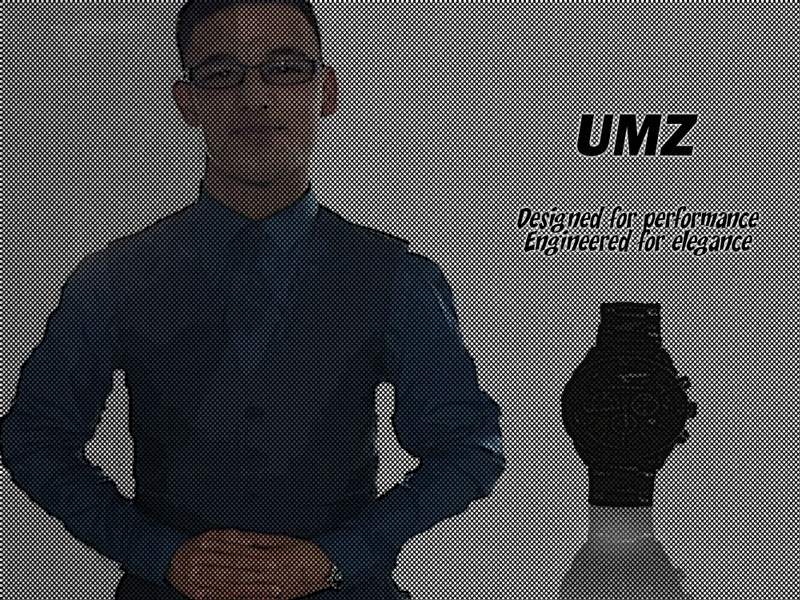

Umz Watch

Description
For this poster, I have created an advert for a Watch company called Umz. The poster emphasis the company slogan that the company makes a prestige watch, “Designed for performance, Engineered for elegance”. I can see this poster in a high end stores promoting this upcoming new brand for the male audience. Even this poster is made with a thought of elegance and class, as it has a suited up model with a faded watch behind him and a watch with a reflection shadow of the watch on the right. The specific target audience would be business males who like to be suited up and have a quality watch on their wrist.
Rationale
The idea I had for this poster was to create a form of advertising for a watch brand. As myself I like to wear high quality watches. I’ve made use of black outline and bold colours and tones to give it the impression that the image has been physically sketched and coloured, which gave a cartoon type effect. The inspiration came from Andy Warhol mass production advertising style pop art for example Campbell’s Soup. Since Warhol use everyday item for his art like soup, so I thought why not use a watch which I see as art.
Thumbnails